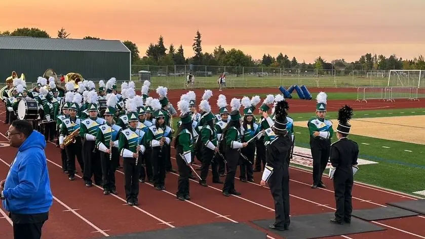

01 · Field & community
Marching Band.
The ensemble
One line.
One pulse.
McKay Marching Band brings together students from Percussion, Concert Band, Symphonic Band, and Wind Ensemble. The group performs at every home Royal Scot football game and at parades throughout the surrounding area.
It is where individual preparation becomes collective motion: step, sound, spacing, and story aligned in real time.

A five-year rebuild
From fewer than 30
to Main Street.
When Scott Avzaradel relaunched McKay’s marching program, fewer than 30 students remained and the band was not competing. The rebuild that followed grew through sustained rehearsal, student commitment, and years of community fundraising.
On February 15, 2026, the Royal Scots carried that work into a Disneyland Main Street parade—a national-stage milestone earned together.
This history and performance date were reported by Salem Reporter on February 25, 2026 ↗
Support the next milestone →